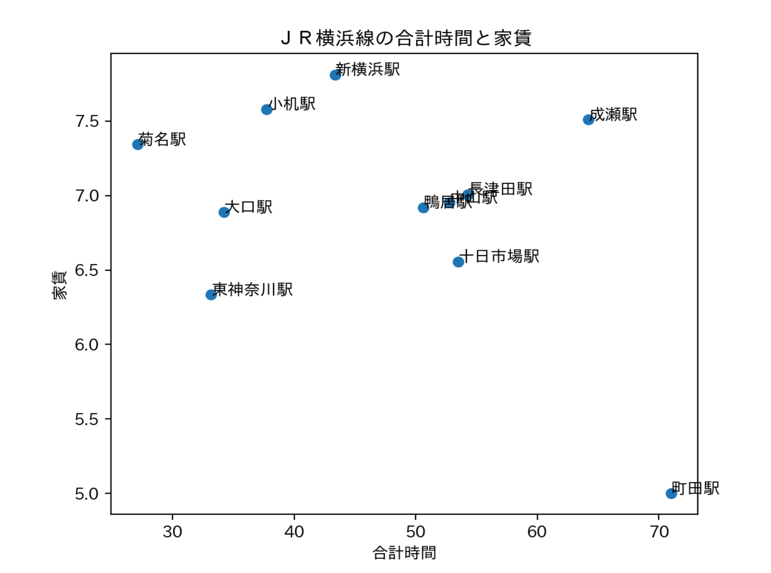
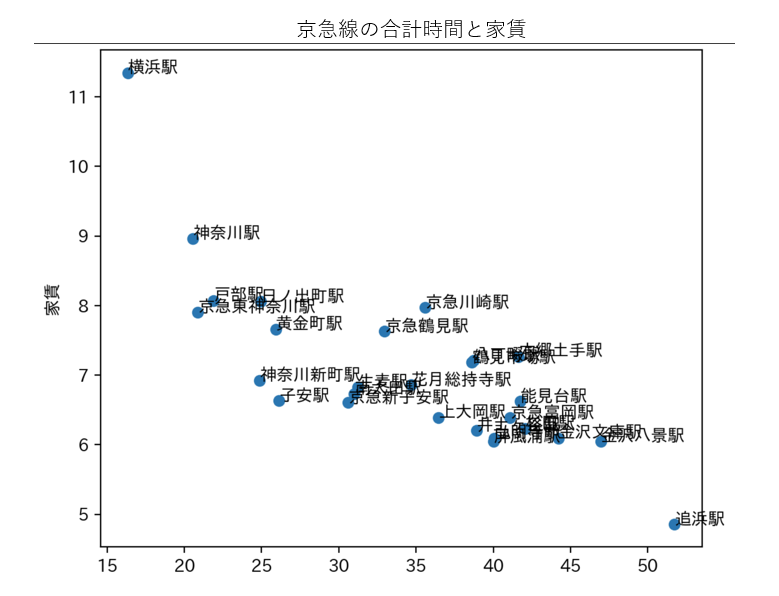
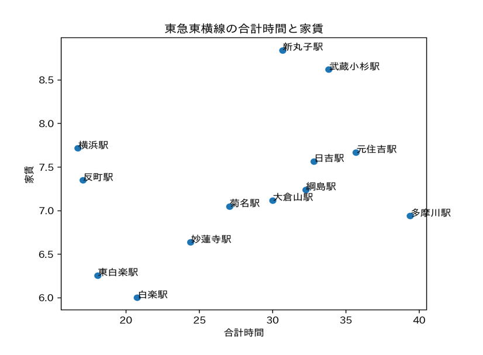

第6回課題
データサイエンス・賃貸情報の分析
＜ターゲット＞
・通学時間を短くしたい人
・横浜キャンパスのサークルや部活に参加したい人
・ショッピングが好きで、休日に東京に行きたい人
・家賃をできれば安くしたい人
↓
＜ターゲットに合った条件＞
１駅からみなとみらいキャンパスへの移動時間が30分以内。
２白楽駅に一本でいける。
３東京内の駅に安くいける。
４上の条件がそろっている中で一番安い。
比較的運賃が安そうな線に絞って比較した。（JR横浜線、京急線、東急東横線）
- JR横浜線の家賃と通学時間の合計

・菊名駅が条件を満たしている。
・通学時間が少し伸びるが、家賃をみると東神奈川駅の方が良い。
- 京急線の家賃と通学時間の合計

・通学時間や家賃の面で見ると、子安駅が良いが、白楽駅に行くのに乗り換えが必要。
- 東急東横線の家賃と通学時間

・他の線よりも30分以内に学校に着ける駅が多い。
・白楽駅、東白楽駅が条件を満たしている。
以上の分析から、私たちの班がターゲットとする人には、菊名、白楽、東泊楽駅にある物件がおすすめできる。
条件を満たしているこれらの駅の中でも、菊名駅はより東京に近い、白楽駅は横浜キャンパスの最寄りであり、家賃が最も安い、東白楽駅は通学時間が短いというようにそれぞれ特徴がある。